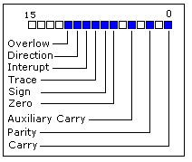

Уроки Ассемблера 8086 для начинающих (Часть 6)
Арифметические и логические команды
Перевод: Поляков А.В. http://www.avprog.narod.ru
Большинство арифметических и логических команд влияют на регистр состояния процессора (или Флаги)

Как вы можете видеть, в этом регистре 16 бит. Каждый бит называется флагом и может принимать значение 1 или 0.
•Carry Flag (CF) - перенос - этот флаг устанавливается в 1, когдаслучается беззнаковое переполнение. Например, если вы увеличили байт 255 + 1 (результат не помещается в диапазоне 0...255). Если переполнение не происходит, этот флаг установлен в 0.
•Zero Flag (ZF) - ноль - устанавливается в 1, если результат равен нулю. Если результат не нулевой, то этот флаг устанавливается в 0.
•Sign Flag (SF) - знак - установлен в 1, если результат - отрицательное число. Если результат положительный, то этот флаг устанавливается в 0. Обычно этот флаг принимает значение старшего значащего бита.
•Overflow Flag (OF) - переполнение - устанавливается в 1, если случается переполнение при арифметических операциях со знаком. Например, если вы увеличили байт 100 + 50 (результат не помещается в диапазоне -128...127).
•Parity Flag (PF) - контроль четности - этот флаг устанавливается в 1, если в младших 8-битовых данных четное число. Если число нечетное, то этот бит установлен в 0. Даже если результат - это слово, то анализируются только 8 младших бит!
•Auxiliary Flag (AF) - внешний перенос - установлен в 1, если случилось переполнение без знака младших 4-х битов (т.е. перенос из 3-го бита).
•Interrupt enable Flag (IF) - прерывание - если этот флаг установлен в 1, то процессор реагирует на прерывание от внешних устройств.
•Direction Flag (DF) - направление - этот флаг используется некоторыми командами для обработки цепочки данных. Если флаг установлен в 0 - обработка происходит в прямом направлении, если 1 - в обратном.
Имеются три группы команд.
Первая группа: ADD, SUB,CMP, AND, TEST, OR, XOR
Эти типы операндов поддерживаются:
REG, memory
memory, REG
REG, REG
memory, immediate
REG, immediate
REG: AX, BX, CX, DX, AH, AL, BL, BH, CH, CL, DH, DL, DI, SI, BP, SP.
memory: [BX], [BX+SI+7], переменная, и т.п...
immediate: 5, -24, 3Fh, 10001101b, и т.п...
После операции между операндами результат всегда записывается в первый операнд. Команды CMP и TEST воздействуют только на флаги и не записывают результат (эта команда используется для принятия решения во время выполнения программы).
Эти команды влияют только на флаги:
CF, ZF, SF, OF, PF, AF.
•ADD - Прибавить второй операнд к первому.
•SUB - Вычесть второй операнд из первого.
•CMP - Вычесть второй операнд из первого только для флагов.
•AND - Логическое И между всеми битами двух операндов. При этом соблюдаются правила:
1 AND 1 = 1
1 AND 0 = 0
0 AND 1 = 0
0 AND 0 = 0
Как видите, мы получаем 1 только в том случае, если оба бита равны 1.
•TEST - То же самое, что AND, но только для флагов.
•OR - Логическое ИЛИ между всеми битами двух операндов. При этом соблюдаются правила:
1 OR 1 = 1
1 OR 0 = 1
0 OR 1 = 1
0 OR 0 = 0
Как видите, мы получаем 1 каждый раз, когда хотя бы один бит равен 1.
•XOR - Логическое XOR (исключающее ИЛИ) между всеми битами двух операндов. При этом соблюдаются правила:
1 XOR 1 = 0
1 XOR 0 = 1
0 XOR 1 = 1
0 XOR 0 = 0
Как видите, мы получаем 1 каждый раз, когда биты имеют различное значение.
Вторая группа: MUL, IMUL, DIV, IDIV
Эти типы операндов поддерживаются:
REG
memory
REG: AX, BX, CX, DX, AH, AL, BL, BH, CH, CL, DH, DL, DI, SI, BP, SP.
memory: [BX], [BX+SI+7], переменная, и т.п...
Команды MUL и IMUL влияют только на эти флаги:
CF, OF
Если результат превышает размер операнда, то эти флаги установлены в 1, если результат умещается в размер операнда, то эти флаги установлены в 0.
Для команд DIV и IDIV флаги не определены.
•MUL - беззнаковое умножение:
если операнд - это байт:
AX = AL * операнд.
если операнд - это слово:
(DX AX) = AX * операнд.
•IMUL - умножение со знаком:
если операнд - это байт:
AX = AL * операнд.
если операнд - это слово:
(DX AX) = AX * операнд.
•DIV - беззнаковое деление:
если операнд - это байт:
AL = AX / операнд
AH = остаток (модуль). .
если операнд - это слово:
AX = (DX AX) / операнд
DX = остаток (модуль). .
•IDIV - деление со знаком:
если операнд - это байт:
AL = AX / операнд
AH = остаток (модуль). .
если операнд - это слово:
AX = (DX AX) / операнд
DX = остаток (модуль). .
Третья группа: INC, DEC, NOT, NEG
Эти типы операндов поддерживаются:
REG
memory
REG: AX, BX, CX, DX, AH, AL, BL, BH, CH, CL, DH, DL, DI, SI, BP, SP.
memory: [BX], [BX+SI+7], переменная, и т.п...
Команды INC и DEC влияют только на эти флаги:
ZF, SF, OF, PF, AF.
Команда NOT не влияет ни на какие флаги!
Команда NEG влияет только на эти флаги:
CF, ZF, SF, OF, PF, AF.
•NOT - инвертирование каждого бита операнда.
•NEG - Меняет знак операнда (дополнение до двух). Обычно она инвертирует каждый бит операнда, а затем прибавляет к нему единицу. Например, 5 преобразуется в -5, а -2 преобразуется в 2.
<<< Предыдущая часть <<< >>> Следующая часть >>>
|